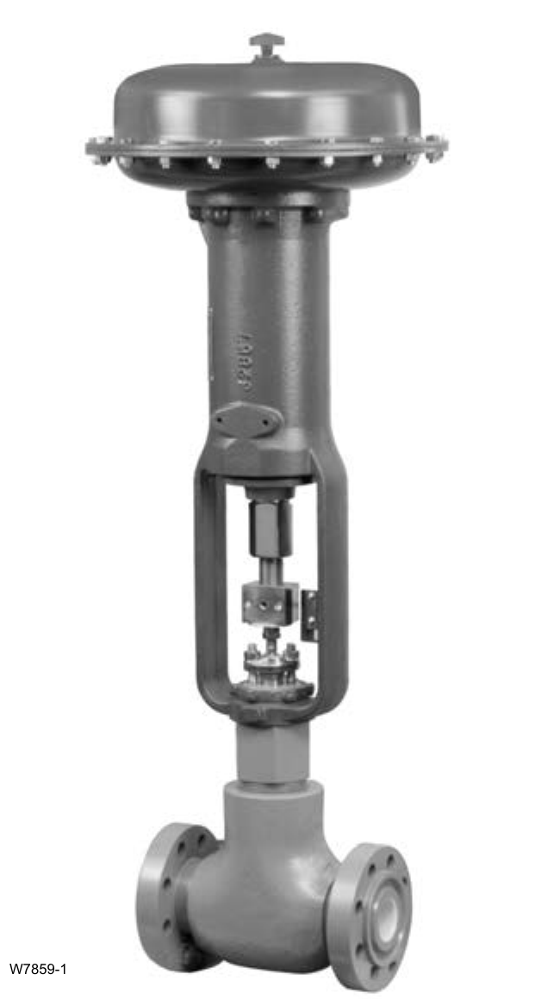

Facility Design Tradeoffs

Onshore well-site choke valves face raw, erosive, particulate-laden wellhead flow at inlet pressures up to 3000 psig — an angle-pattern body (Design D/DA) is chosen specifically because it survives this duty better than an in-line globe body, applying CVE1's body-style selection judgment to a genuinely severe inlet condition.
Fisher Control Valve Sourcebook — Oil & Gas (© 2013 Fisher), Chapter 7 "Onshore Oil and Gas Production," Figure 7-3 (drawing number W7859-1, printed p. 7-4) — "Figure 7-3. Product Catalog − High Pressure − D or DA; Oil and Gas − D or DA." — used directly. Component Index: ogas-cmp-well-site-choke-valve-photo.